Chimola · Lima · venta exclusiva mayorista
Sitio Mayorista B2B
Cuatro formas de comprar, un admin que
edita todo, y comunicaciones que siempre llegan con el Excel listo.
→ o click para avanzar · F pantalla completa
Cómo se compra · 1 de 5
Mirando el catálogo
- Fotos y stock real de Ezeiza: lo que se ve, se puede pedir.
- Filtros que acompañan el scroll, búsqueda y scroll infinito.
- Y el switch “Encender el sitio”: todo el catálogo en colores claros.
mayorista.lautin / Catálogo
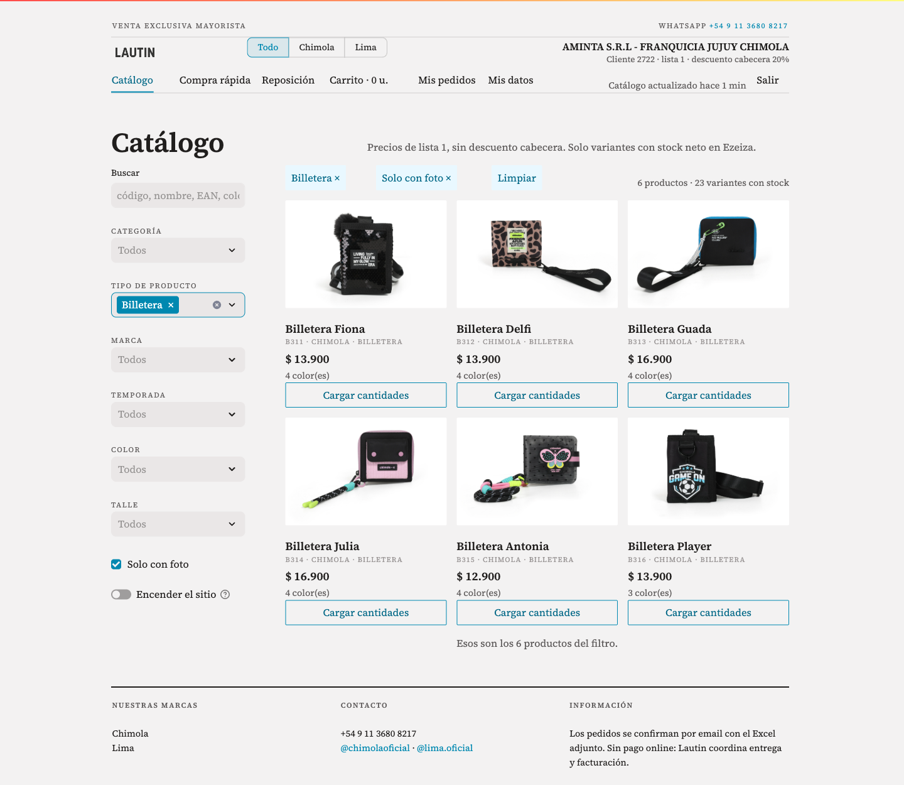
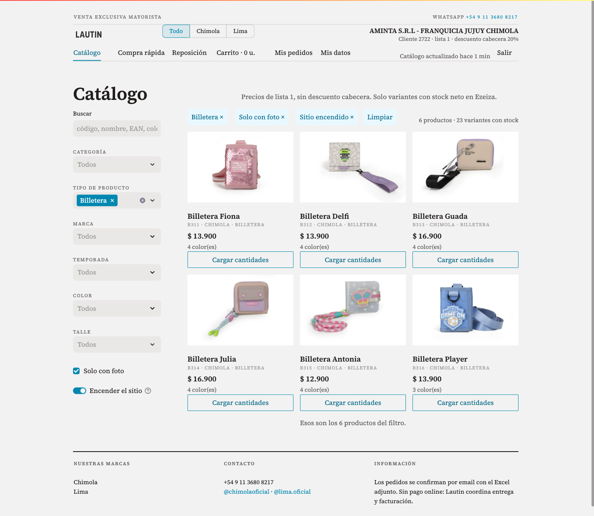
Sitio encendido
Cómo se compra · 2 de 5
Carga directa en el catálogo
- «Cargar cantidades» despliega el panel en la misma vista.
- Cantidades por variante sin perder los filtros ni el scroll.
- Total en vivo, con el descuento del cliente.
mayorista.lautin / Catálogo
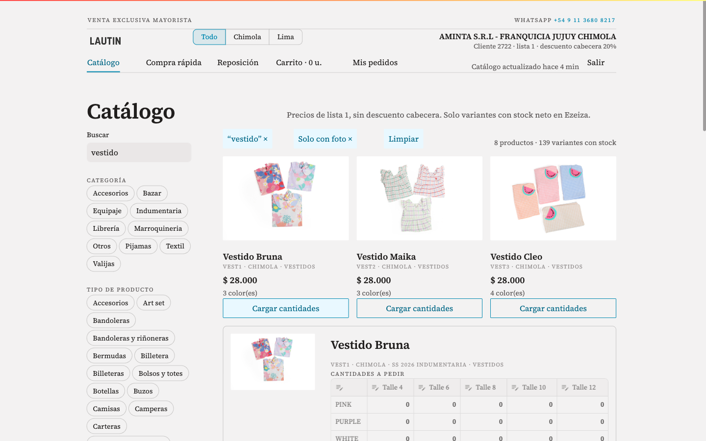
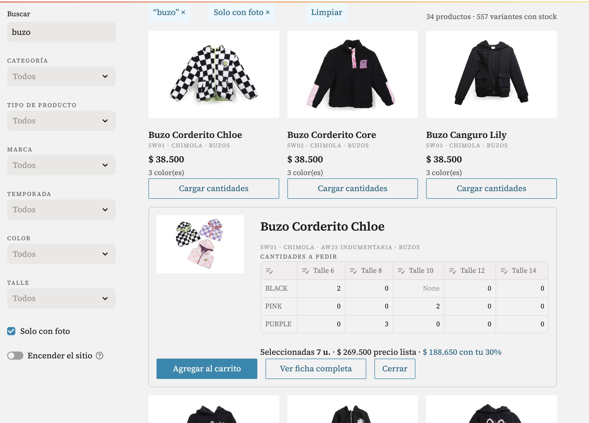
Producto con variantes de color
Producto con variantes de talle y color
Cómo se compra · 3 de 5
La ficha de producto
- Producto con colores: una fila por color, y listo.
- Con talle y color: la matriz completa, todas las variantes de una sola vez.
- Avisa si se pide más de lo disponible, sin revelar el stock.
- Arriba, la galería: las miniaturas cambian el visor por color.
mayorista.lautin / Producto
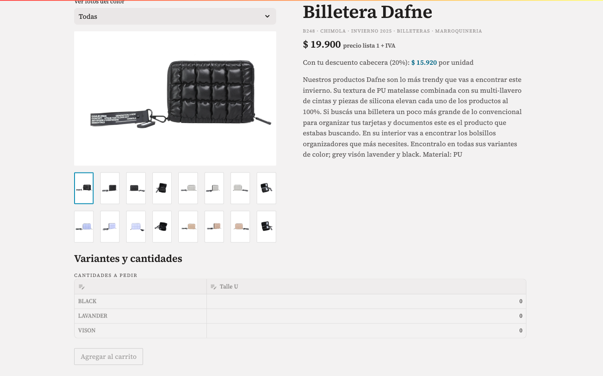
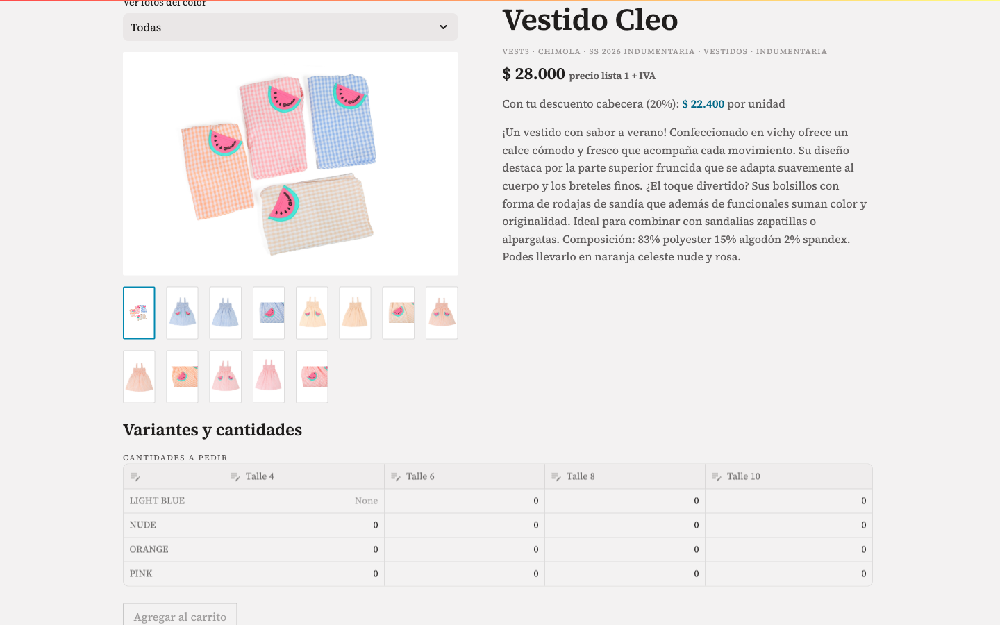
Solo color
Talle × color
Cómo se compra · 4 de 5
Compra rápida
- Una sola vista: todo el catálogo en una tabla con miniaturas.
- Cinco filtros que se cruzan solos (marca, categoría, tipo, temporada + búsqueda).
- Cantidades directo sobre la lista y un click al carrito.
mayorista.lautin / Compra rápida
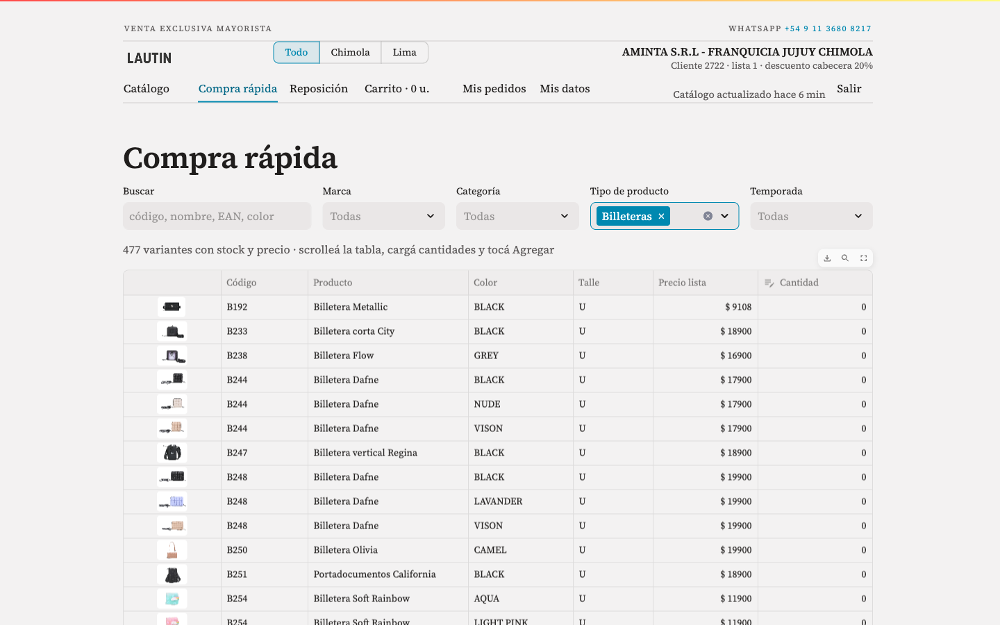
Cómo se compra · 5 de 5
El circuito Excel
- Cualquier filtro se exporta a Excel: miniaturas, link a cada foto, precios de la lista del cliente y totales con su descuento.
- Todo bloqueado salvo Cantidad (resaltada): imposible romperlo.
- Se puede completar offline y volver a subir tal cual.
Exportar → completar → subir
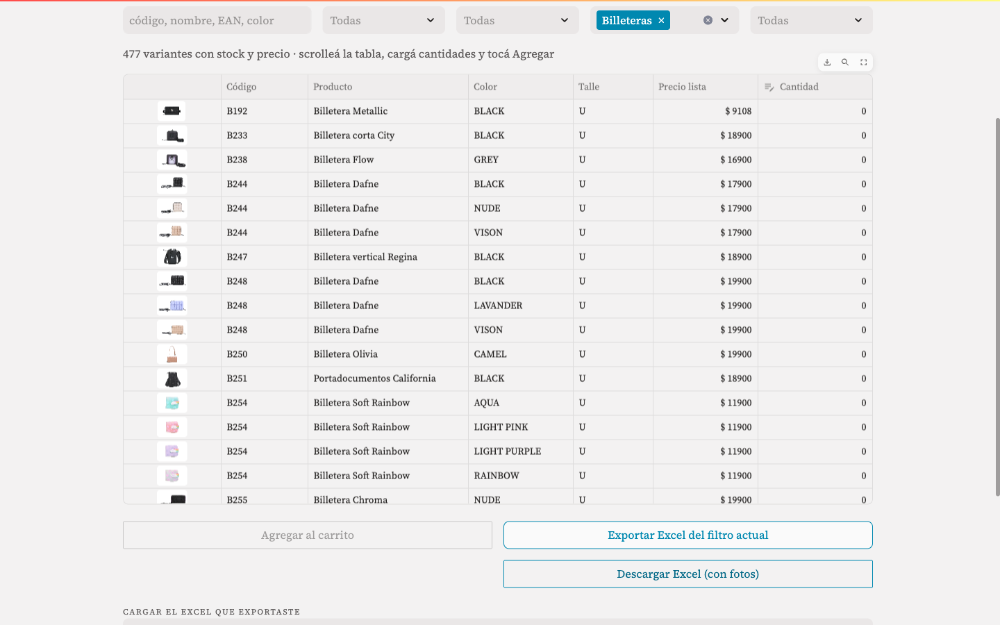
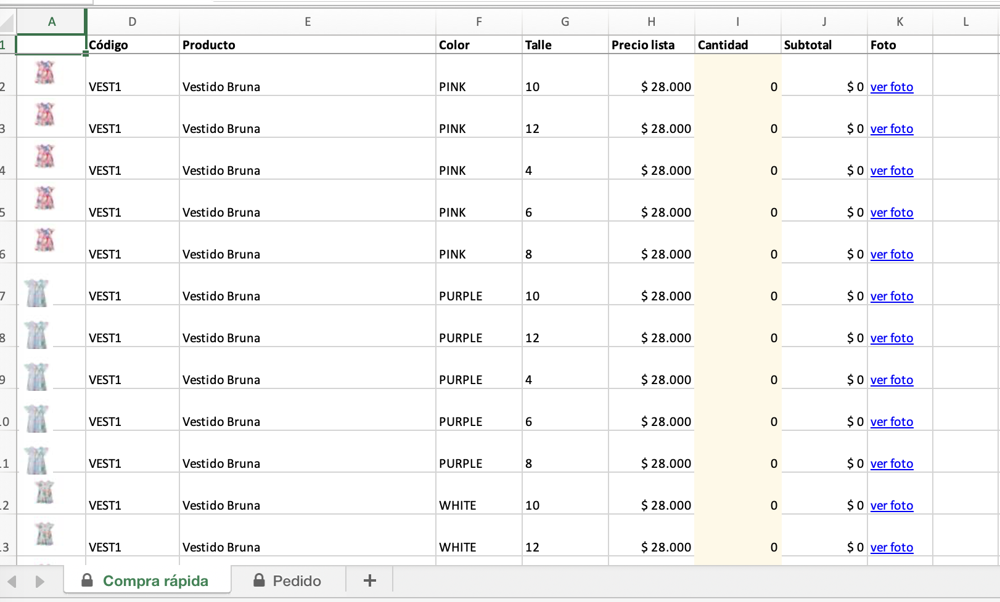
En el sitio
El Excel
Cómo se compra · solo franquicias
Reposición sugerida
- Cruza lo que vendió el punto de venta con lo disponible en Ezeiza.
- Días a cubrir (7/14/21/30), filtros y cantidades sugeridas editables.
- Un click al carrito, o el mismo circuito Excel, ya precargado.
mayorista.lautin / Reposición
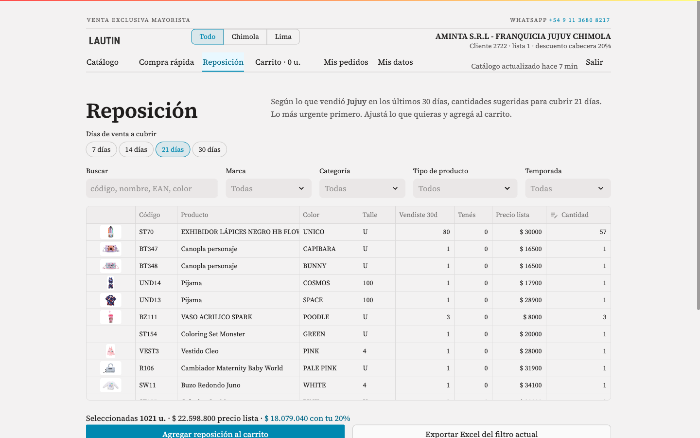
Postventa
Autonomía del cliente
- Mis pedidos: historial con estados, detalle completo, repetir, re-descargar el Excel.
- Puede cancelar mientras Lautin no lo procesó, con aviso automático.
- Mis datos: contacto, teléfono y cambio de password, sin llamar a nadie.
mayorista.lautin / Mis pedidos

Qué maneja el equipoAdmin
Todo editable: el producto
- Pisar lo de Aleph cuando haga falta: nombre, descripción, precios por lista, U.B.
- Variantes una por una: stock manual, ocultar, precio.
- Fotos por color, variantes manuales y elegir la portada del catálogo.
- Publicar / ocultar / destacar: solo o en lote por tipo, temporada o categoría.
mayorista.lautin / Administración
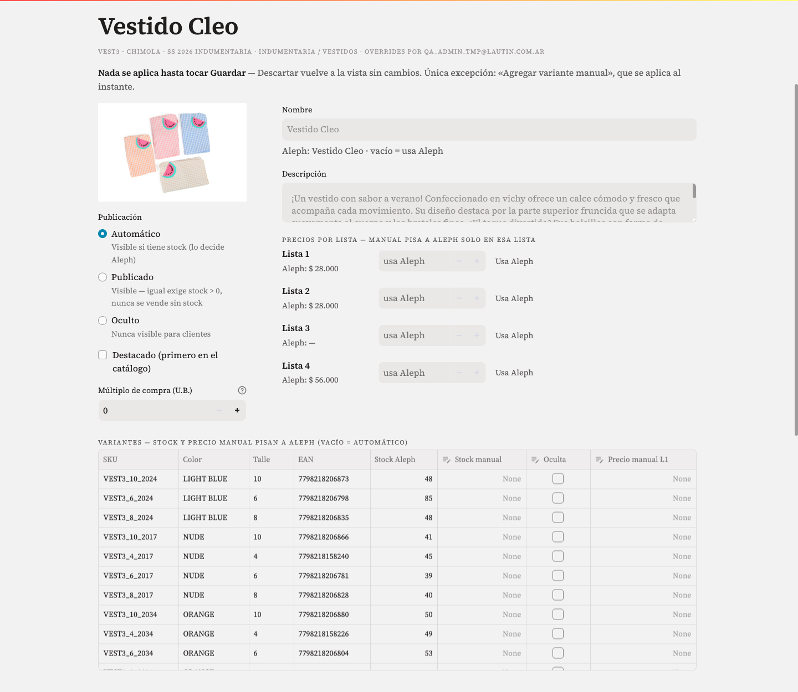
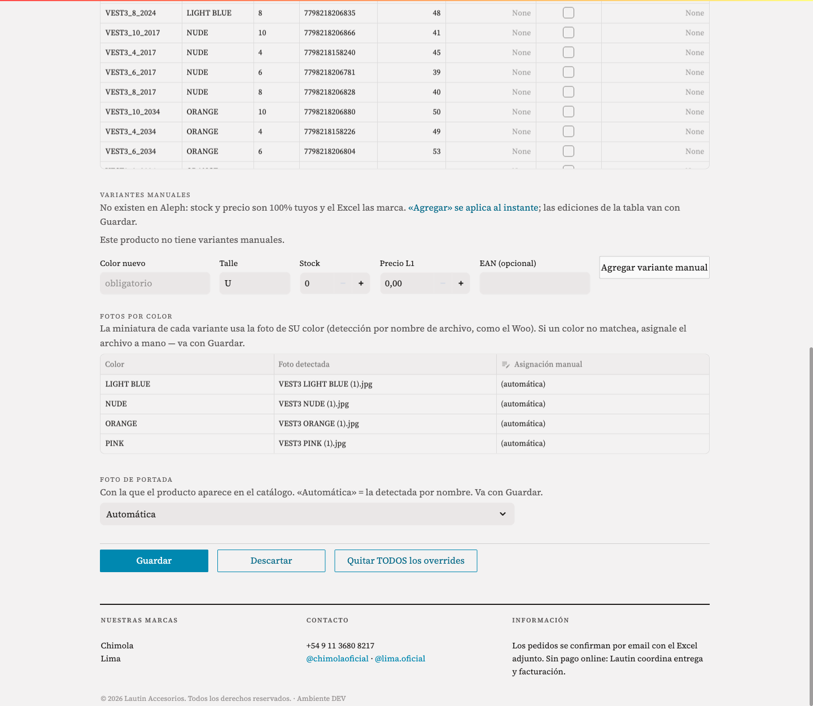
Editor de producto · datos, precios y variantes
Editor de producto · variantes manuales, fotos y portada
Qué maneja el equipoAdmin
Todo editable: el cliente
- Rol y cliente de Aleph de cada usuario de acceso.
- Overrides de descuento y lista de precios, sin tocar el ERP.
- Contacto y CUIT del cliente, siempre a mano.
- Alta de usuarios, reset de password, activar/desactivar.
mayorista.lautin / Administración
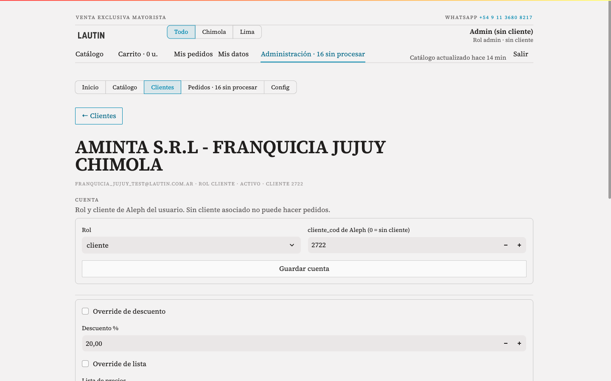
Edición del cliente
Qué maneja el equipoAdmin
Los pedidos pueden modificarse
- Modificar un pedido confirmado: cambiar cantidades o quitar líneas.
- Recalcula totales, regenera el Excel y le avisa al cliente qué cambió.
- Estados con un click (procesado / cancelado); una vez procesado, inmutable.
mayorista.lautin / Administración
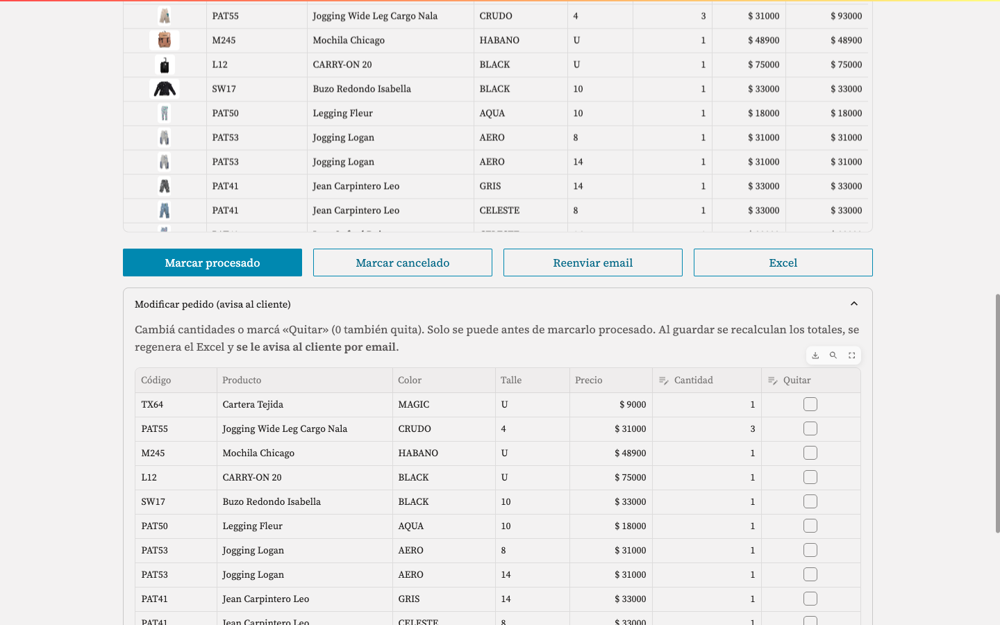
Detalle del pedido · edición de líneas
Qué maneja el equipoAdmin
La historia de cada cliente
- Métricas: total histórico, ticket promedio, último pedido.
- Todos sus pedidos con estados, y el top de productos que compra.
- Import del historial de Aleph: los pedidos previos al sitio.
mayorista.lautin / Administración
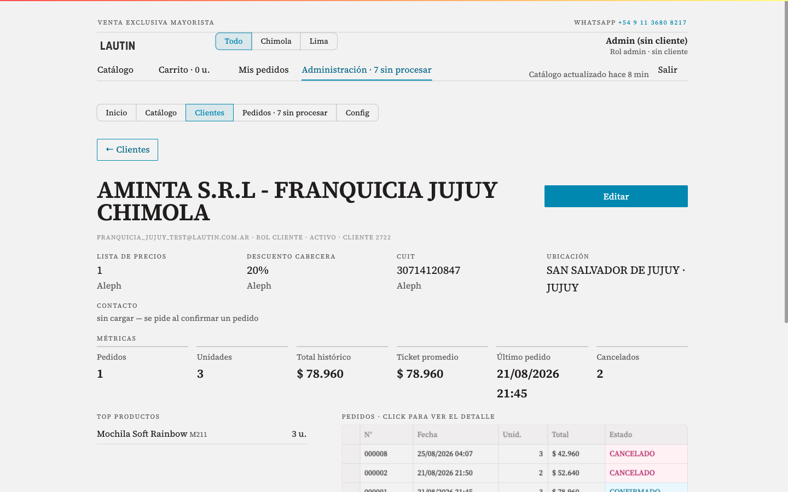
Ficha del cliente · métricas e historial
Comunicaciones
Siempre con el Excel adjunto
- Cada evento avisa solo: confirmación, modificación, procesado, cancelación.
- El Excel va SIEMPRE adjunto, con miniaturas y link a las fotos de cada línea.
- Si Lautin modifica, el mail dice exactamente qué cambió y qué se quitó.
- Los textos se editan desde Config, con vista previa y envío de prueba.
Email · pedido modificado
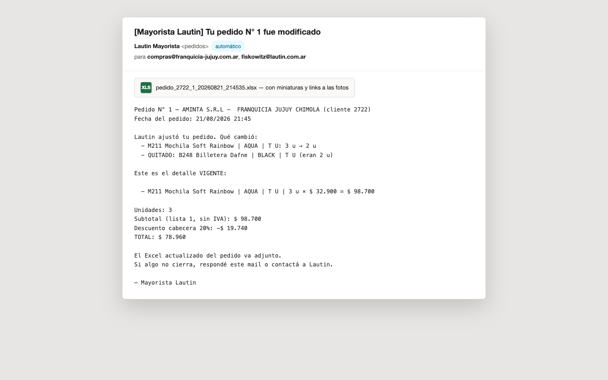
El sitio
Un solo lugar para comprarle a Lautin
Funcionando con los datos reales de
Aleph.
mayorista-b2b-dev-vhnuyigzqa-uc.a.run.app